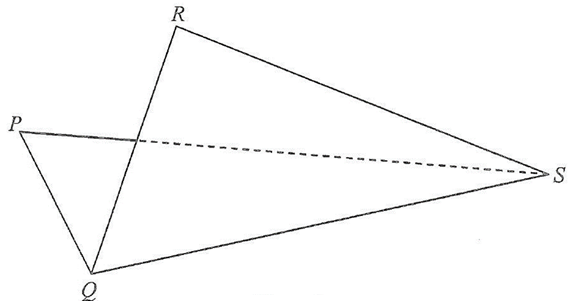

Trigonometry — cosine rule, sine rule, 3-D folding & shortest distance to a plane
(a) \(PQRS\) is a thin quadrilateral metal sheet, where \(PQ=12\text{ cm}\), \(PS=10\text{ cm}\), \(QR=13\text{ cm}\), \(\angle QPS=82^\circ\) and \(\angle QRS=65^\circ\). Find
(i) the length of \(QS\),
(ii) \(\angle RQS\). 4 marks
(b) The metal sheet \(PQRS\) described in (a) is now folded along \(QS\) (see Figure 2). It is given that the angle between the plane \(PQS\) and the plane \(QRS\) is \(80^\circ\).
(i) Find the shortest distance from \(R\) to the plane \(PQS\).
(ii) Let \(X\) be any point lying on the plane \(QRS\). Someone claims that the distance between \(P\) and \(X\) exceeds \(8\text{ cm}\). Is the claim correct? Explain your answer. 4 marks

Slider demo: \(\triangle PQS\) is fully determined by two sides and the included angle. The live value of \(QS\) is shown on the canvas.
Live readout shows \(QS\) (fixed \(\approx 14.512\)) and the two possible values of \(\angle RQS\).
The perpendicular distance from \(R\) to \(QS\) is \(RT = 13\sin\angle RQS\). The height of \(R\) above the plane \(PQS\) is \(h = RT\sin 80^\circ\).
The true shortest distance from \(P\) to the plane \(QRS\) is \(d^* \approx 8.064\text{ cm}\). The slider lets you see what happens when we (wrongly) choose a slightly too-small \(d\).